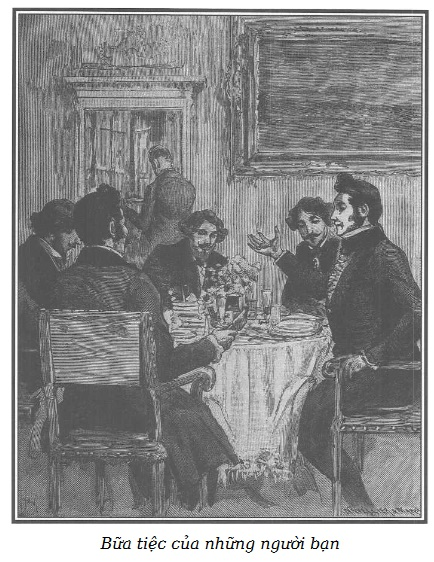

Ông de Lucenay bước vào nhà d’Harville.
Vết thương nhẹ đến nỗi Công tước không phải đeo băng treo cánh tay. Vẻ mặt của ông ta lúc nào trông cũng giễu cợt ngạo mạn, ông ta luôn hoạt động, tính hay loay hoay đã thành cố tật. Mặc dù những thói xấu của ông ta, những lời bông đùa khiếm nhã, cái mũi to quá cỡ làm cho khuôn mặt của ông ta gần như hài hước, chúng tôi đã nói, ông de Lucenay không phải loại người tầm thường, bởi ông ta có một vẻ trang trọng tự nhiên và lúc nào cũng táo tợn đến gan dạ.
– Anh Henri thân mến, chắc anh vẫn tưởng tôi không quan tâm đến anh! – Ông d’Harville nói, chìa tay cho ông de Lucenay. – Mãi sáng nay tôi mới biết câu chuyện đáng tiếc của anh.
– Đáng tiếc, hừm… Hầu tước! Mất bao nhiêu, được bấy nhiêu, như người ta nói. Đời tôi chưa bao giờ được cười nhiều như thế! Ông Robert quý báu ấy trịnh trọng không muốn để ai bảo anh ta bị rớt dãi. Thực tế, anh không biết việc đó, phải không? Đó là nguyên nhân của cuộc đấu kiếm. Chiều hôm ấy ở sứ quán, trước mặt bà nhà và nữ Bá tước Mac-Gregor, tôi hỏi anh ta trị đờm dãi cách nào. Nói thật giữa chúng ta với nhau, anh ta không có chứng tật ấy đâu. Nhưng chẳng sao. Anh hiểu rồi chứ, nghe hỏi điều đó trước mặt người đẹp thì đúng là chối tai quá.
– Thật là điên! Tôi biết anh mà. Nhưng Robert là ai?
– Nào tôi có biết là ai, đó là nhân vật tôi gặp ở vùng suối khoáng. Anh ta đi qua trước mặt chúng tôi trong vườn mùa đông của sứ quán, tôi gọi anh ta để buông câu đùa quái quỷ ấy. Ngày hôm sau, anh ta trả lời tôi rất lịch sự bằng một mũi kiếm nhẹ. Đấy, quan hệ với nhau chỉ có thế. Thôi đừng nói những chuyện vớ vẩn ấy nữa. Tôi đến xin anh một chén trà.
Nói rồi ông ta ngã người trên sofa, sau đó lấy đầu gậy chọc chọc vào khoảng giữa tường và khung một bức tranh treo phía trên đầu ông ta, làm cho cái khung bắt đầu đu đưa.
– Henri, tôi đợi anh và dành cho anh một câu chuyện bất ngờ. – Ông d’Harville nói.
– A, chuyện bất ngờ nào? – Ông de Lucenay nói to, càng lắc mạnh bức tranh một cách đáng ngại.
– Anh sẽ làm long bức tranh và nó rơi xuống đầu đấy!
– Chính thế! Mắt anh tinh lắm. Nhưng bất ngờ gì thì nói đi.
– Tôi có một vài bạn cùng đến ăn trưa.
– Thế thì hoan hô! Trăm lần hoan hô, nghìn lần hoan hô. – De Lucenay kêu toáng lên, đập gậy thật mạnh lên đệm sofa. – Mời những ai? De Saint-Remy? Không, thực tế anh ta đã về quê mấy ngày nay, không biết về giữa mùa đông thì làm được cái gì?
– Anh biết chắc anh ấy không ở Paris?
– Rất chắc. Tôi đã viết thư nhờ anh ta đứng làm chứng cho cuộc đấu kiếm. Anh ta đi vắng, tôi lại phải nhờ Huân tước Douglas và Sezannes.
– Thật tuyệt, họ sẽ đến đây với chúng ta.
– Hoan hô, hoan hô, hoan hô! – De Lucenay lại kêu to.
Thế rồi lăn lộn trên cái sofa, ông ta vừa kêu không rõ tiếng, vừa uốn mình nhảy nhót mà ngay cả một nghệ sĩ nhào lộn cũng phải chịu thua.
Trò nhào lộn của Công tước de Lucenay chợt dừng lại vì có de Saint-Remy đến. Tử tước vui vẻ nói:
– Không cần phải hỏi ông de Lucenay có ở đây không. Tôi đã nghe thấy tiếng của anh từ dưới kia!
– Ô kìa, đồ quỷ quái, – Công tước ngạc nhiên đứng thẳng người lên – tưởng anh về quê?
– Tôi mới về lại hôm qua. Vừa nhận được thiệp mời của d’Harville là tôi chạy đến ngay. Rất mừng vì chuyện bất ngờ này!
De Saint-Remy chìa tay cho de Lucenay, rồi cho Hầu tước.
– De Saint-Remy, tôi biết ơn sự sốt sắng của anh. Có phải là lẽ đương nhiên không? Các bạn của de Lucenay phải vui mừng vì kết thúc may mắn của trận đấu, dẫu sao thì cũng có thể có những hậu quả đáng tiếc.
Công tước vẫn cố tình hỏi:
– De Saint-Remy, anh về nông thôn giữa mùa đông để làm gì? Lạ thật đấy!
– Con người đến tò mò! – Tử tước nói với ông d’Harville, rồi trả lời Công tước. – Tôi muốn quen dần với việc phải xa Paris bởi chẳng bao lâu nữa tôi phải rời Paris.
– A, câu chuyện mơ được đặc phái về sứ quán Pháp ở Gerolstein. Hãy để chúng tôi được yên về những hoạt động ngoại giao hão huyền của anh! Chẳng bao giờ anh về đấy đâu. Vợ tôi đã nói và mọi người đều nói thế.
– Tôi xin cam đoan là bà de Lucenay cũng lầm như mọi người.
– Trước mặt tôi, bà ấy đã nói với anh làm như vậy là điên rồ.
– Thế đời tôi thiếu gì chuyện điên rồ.
– Điên rồ vì ăn diện xa hoa thì may quá, dù có phải sạt nghiệp vì những thói bốc giời như vậy, tôi chấp nhận. Nhưng tự chôn vùi trong một cái xó triều đình như vậy ở Gerolstein! Thử xem nó đưa đến đâu. Đấy không phải là điên rồ mà là nhảm nhí, và anh thì thừa thông minh để không làm việc nhảm nhí.
– Cẩn thận đấy, anh de Lucenay ạ! Nói xấu cái triều đình Đức ấy, anh sẽ gây chuyện với anh d’Harville, bạn chí thân của đương kim Đại công tước, người vừa mới tiếp tôi một cách hết sức khả ái ở sứ quán, nơi tôi được giới thiệu với Người.
Ông d’Harville nói:
– Thật đấy, Henri ạ! Nếu anh biết ngài Đại công tước như tôi đã biết, anh sẽ hiểu là de Saint-Remy không ngần ngại gì phải đến Gerolstein một thời gian.
– Tôi tin anh, mặc dù người ta nói ngài Đại công tước kiêu hãnh một cách độc đáo. Nhưng điều đó không trái với việc một con người như de Saint-Remy, hào hoa phong nhã bậc nhất, chỉ có thể sống ở Paris… chỉ làm nổi bật hết giá trị của anh ấy ở Paris.
Những thực khách của d’Harville vừa đến thì Joseph bước vào và nói nhỏ điều gì đó vào tai ông chủ.
Hầu tước nói:
– Các bạn cho phép chứ? Người thợ kim hoàn của nhà tôi mang kim cương đến để tôi chọn cho nhà tôi. Một tặng phẩm bất ngờ. Anh de Lucenay, anh chẳng xa lạ gì, chúng ta là những ông chồng thuộc dòng quý tộc gốc.
– Ái chà! Nếu là tặng phẩm bất ngờ, – ông Công tước la lên – bà nhà tôi hôm qua cũng đã dành cho tôi một món trứ danh!
– Một thứ quà choáng lộn phải không?
– Bà ấy hỏi vay tôi mười vạn franc.
– Và anh thì hào hiệp… anh đã…
– Cho vay! Nhà tôi sẽ thế chấp bằng trang trại của bà ấy ở Arnouville. Vợ chồng cũng phải sòng phẳng mà. Thế thôi, mấy ai cho vay mười vạn franc trong vòng hai tiếng đồng hồ khi cần, phải nói đó là rất tử tế, rất hiếm có, phải không ngài phá gia, ngài rất thạo việc vay mượn? – Công tước cười và nói với de Saint-Remy, không nghĩ gì đến hậu quả của lời nói.
Mặc dầu là con người táo bạo, Tử tước hơi đỏ mặt một chút rồi điềm tĩnh nói tiếp:
– Mười vạn franc, món tiền lớn thật! Một người phụ nữ làm gì mà cần đến mười vạn franc? Đàn ông chúng mình đã đành.
– Thực tình tôi cũng chẳng biết nhà tôi làm gì với số tiền ấy. Vả lại, thế nào cũng được. Có thể còn thiếu mấy khoản trang sức. Mấy tay cung ứng nóng vội và khó tính. Đó là việc riêng của bà ấy. Vả lại anh de Saint-Remy ạ, chắc anh cũng thấy cho vay tiền mà lại hỏi dùng để làm gì thì không hay lắm.
– Nhưng ai cho vay thì cũng tò mò muốn biết món tiền cho vay ấy để làm gì. – Tử tước vừa nói vừa cười.
Ông d’Harville nói:
– Tất nhiên! Này de Saint-Remy, anh là người rất sành, anh giúp tôi chọn món trang sức tôi mua tặng vợ tôi. Hễ anh đồng ý là tôi đồng ý, anh là vua khoản thời trang.
Người thợ kim hoàn bước vào, mang mấy hộp tư trang đựng trong một túi da lớn.
– Kìa, ông Baudoin! – Ông de Lucenay nói.
– Thưa Công tước, tôi đến để phục vụ các ngài.
– Tôi chắc rằng ông đã làm sạt nghiệp vợ tôi bằng những thứ cám dỗ ma quái và choáng lộn này. – De Lucenay nói.
– Bà Công tước mùa đông này chỉ đánh bóng lại các viên kim cương. – Người thợ kim hoàn có phần hơi lúng túng. – Đúng là tôi vừa đem hàng lại cho bà trước khi đến đây.
De Saint-Remy biết bà de Lucenay muốn giúp đỡ mình nên đã phải đổi kim cương của bà lấy kim cương giả. Anh ta khó chịu vì cuộc gặp gỡ này, nhưng vẫn táo bạo nói tiếp:
– Các ông chồng đến là tò mò! Đừng trả lời, ông Baudoin ạ!
– Tò mò! Chắc là không. – Công tước nói, – bà ấy là người trả tiền. Bà ấy ngông cuồng mặc bà ấy. Bà ấy còn giàu hơn tôi.
Trong lúc nói chuyện như thế, ông Baudoin trải ra trên bàn mấy chuỗi hồng ngọc và kim cương rất đẹp.
– Rực rỡ làm sao! Những viên ngọc này được mài giũa thật tuyệt vời! – Huân tước Douglas nói.
Người thợ kim hoàn trả lời:
– Thưa ông, tôi đã thuê một người thợ mài thuộc loại giỏi nhất ở Paris. Tai họa đã làm cho người ấy hóa điên và tôi không tìm đâu được một người thợ thứ hai như thế. Bà chào hàng của tôi cho biết có lẽ sự cùng khổ đã làm cho người ấy quẫn trí đến thế.
– Cùng khổ! Ông giao kim cương cho những người trong cảnh khốn cùng!
– Thưa ông, đúng thế. Chưa thấy một người thợ mài nào biển thủ, mặc dù hoàn cảnh họ rất quẫn bách.
– Cái chuỗi này giá bao nhiêu? – Ông d’Harville hỏi.
– Ông Hầu tước chú ý cho, các viên ngọc đều sắc nước, và cắt gọt rất đẹp, to gần bằng nhau.
– Những lời nói năng thận trọng này, – de Saint-Remy cười – rất nguy hại cho túi tiền của anh, anh d’Harville ạ. Anh hãy chờ phán một giá quá quắt đi!
– Nào, ông Baudoin, nói thực đi, bao nhiêu? – Ông d’Harville nói.
– Tôi không muốn ngài Hầu tước phải mặc cả. Ít nhất cũng phải là bốn mươi hai nghìn franc.
Ông de Lucenay la lên:
– Các ngài ơi, các đức ông chồng hãy im lặng mà chiêm ngưỡng ông d’Harville dành cho vợ món quà bất ngờ bốn mươi hai nghìn franc. Quỷ quái! Chớ tiết lộ việc này ra, làm thế thì xấu lắm!
– Các ngài muốn cười bao nhiêu tùy thích. – Hầu tước vui vẻ nói. – Tôi mê vợ tôi, tôi không giấu điều đó. Tôi còn nói ra, còn khoe nữa kia đấy!
– Điều đó đã rõ, – de Saint-Remy nói tiếp – một món quà như thế vượt quá mọi lời bàn cãi.
– Tôi lấy cái chuỗi này, – ông d’Harville nói – nếu ông de Saint-Remy thấy cái viền đen này hợp với thị hiếu.
– Nền đen càng làm cho các viên ngọc thêm rực rỡ, bố trí như vậy là tuyệt vời.
– Tôi quyết định lấy cái chuỗi này. – Ông d’Harville nói. – Ông Baudoin ạ, ông sẽ tính toán với ông Doublet, quản gia của tôi.
– Thưa Hầu tước, ông Doublet đã cho tôi biết trước rồi. – Người thợ kim hoàn nói. – Ông ta đi ra, sau khi đã bỏ lại vào túi mà không đếm lại các vật quý mình đã đem đến, mà trong khi trò chuyện de Saint-Remy đã tò mò mân mê và ngắm nghía rất lâu.
Ông d’Harville đưa chuỗi ngọc cho Joseph đang đứng chờ lệnh, nói nhỏ:
– Dặn cô Juliette phải khéo léo bỏ lẫn vào các hạt kim cương của bà. Không cho bà chủ biết, để sự bất ngờ càng lớn hơn.

.Vừa lúc đó, đầu bếp vào, báo bữa tiệc đã xong. Các vị khách sang phòng ăn, ngồi vào bàn.
– Anh d’Harville, – de Lucenay nói – anh có biết cái nhà này là một trong những tòa nhà sang trọng, được bố trí đẹp nhất Paris không?
– Quả có thế, nhưng nó không được rộng. Dự định của tôi là xây thêm một hành lang ra vườn. Bà nhà tôi đôi lúc muốn tổ chức vài cuộc đại vũ hội nhưng các phòng khách không đủ rộng. Tôi thấy không có gì bất tiện bằng vũ hội lại tổ chức vào những phòng hằng ngày mình vẫn ở. Thành ra lại phải di chuyển sang chỗ khác.
– Tôi đồng ý với d’Harville. – De Saint-Remy nói. – Không có gì tầm thường, trọc phú bằng những cảnh dọn nhà vì có vũ hội hoặc hòa nhạc. Muốn tổ chức những dạ hội thật đẹp mà không phiền toái, thì phải có địa điểm riêng. Những phòng rộng, chan hòa ánh sáng dành cho vũ hội lộng lẫy phải khác với những phòng khách bình thường như là tranh hoành tráng khác với tranh trên giá vẽ.
– Anh nói đúng. – D’Harville nói. – Đáng tiếc là de Saint-Remy không có một triệu hoặc một triệu rưỡi bảng tiền lợi tức. Nếu có, anh ấy sẽ cho chúng ta ngắm biết mấy kỳ quan!
– Bởi chúng ta có cái hạnh phúc có một chính thể đại nghị. – Công tước de Lucenay nói. – Chẳng phải nghị viện hằng năm nên chuẩn y cho de Saint-Remy một triệu đồng và cử anh ấy làm đại diện ở Paris cho thị hiếu và thanh lịch Pháp, điều đó sẽ quyết định thị hiếu và thanh lịch của châu Âu và thế giới?
– Đồng ý! – Tất cả cùng reo lên.
– Và triệu bạc ấy, – de Lucenay nói thêm – hằng năm đánh thuế vào những tên cho vay nặng lãi gớm guốc, có gia tài khổng lồ nhưng sống biển lận, bòn từng xu.
– Và như thế, – d’Harville tiếp – buộc bọn họ phải đài thọ những cảnh xa hoa mà đáng lẽ họ phải bày ra.
– Chưa tính đến chức giáo chủ, hay đúng hơn đại sứ thanh lịch phong cho de Saint-Remy, – de Lucenay nói tiếp – sẽ có một ảnh hưởng to lớn đến thị hiếu chung.
– Anh sẽ trở thành hình mẫu ai cũng muốn học theo.
– Cái đó đã rõ.
– Càng cố học anh, thị hiếu càng sáng ra.
– Thời Phục hưng, thị hiếu ở đâu cũng tuyệt vời vì nó mô phỏng theo thị hiếu của giới quý tộc, mà thị hiếu này thì rất tinh tế.
– Do vấn đề đã trở nên long trọng như thế, – ông d’Harville vui vẻ nói tiếp – tôi thấy chỉ còn cách phải đưa đơn thỉnh cầu lên hai viện để đặt ra chức vụ đại sứ khoa thanh lịch Pháp.
– Và vốn các nghị sĩ, không trừ một ai, là những người có tư tưởng lớn, rất nghệ sĩ và rất tuyệt vời, việc này sẽ được biểu quyết bằng hoan hô.
Ông d’Harville nói:
– Trong khi chờ đợi quyết định thừa nhận quyền lực của anh, điều mà anh đã có trong thực tế, tôi muốn xin ý kiến anh về cái hành lang mà tôi sắp xây dựng. Bởi tôi rất lưu ý những suy nghĩ của anh về các lễ hội tưng bừng.
– Đầu óc thô thiển của tôi sẵn sàng để phục vụ anh.
– Bạn thân, bao giờ thì khánh thành những công trình lộng lẫy ấy?
– Có lẽ sang năm bởi tôi sẽ bắt đầu cho xây ngay.
– Anh thật là con người lắm dự định!
– Vâng, còn một số nữa… Tôi đang nghĩ cách làm đảo lộn hoàn toàn khu Val-Richer.
– Trang trại của anh ở Bourgogne à?
– Vâng, ở đó có điều rất hay để làm, nếu trời còn cho tôi sống…
– Khổ ông cụ non!
– Có phải vừa rồi anh có mua thêm một trang trại bên cạnh Val-Richer cho tròn khoảnh phải không?
– Vâng, một vụ rất hay, theo lời khuyên của ông chưởng khế.
– Ông chưởng khế hiếm có và quý báu nào đã giúp anh những cái hay như thế?
– Ông Jacques Ferrand.
Nghe đến tên người này, trán của de Saint-Remy khẽ nhăn.
– Ông ta có đúng là con người trung thực như người ta nói không? – De Saint-Remy lơ đãng hỏi d’Harville lúc này cũng đang nhớ lại lời Rodolphe nói với Clémence về lão chưởng khế.
– Jacques Ferrand? Còn phải nói! Một con người liêm chính như thời cổ xưa. – De Lucenay nói.
– Được kính trọng và rất đáng kính trọng.
– Rất mộ đạo, chẳng làm hại ai bao giờ.
– Cực kỳ biển lận. Một điều bảo đảm cho các khách hàng.
– Một trong những ông chưởng khế thuộc lớp kỳ cựu, họ thường hỏi lại xem anh coi họ là giống gì mà đòi họ biên nhận, khi anh đến gửi tiền.
– Chỉ cần thế thôi, tôi xin gửi họ cả gia tài.
– De Saint-Remy nghe ở đâu ra mà nghi ngờ một người đáng kính, nổi tiếng liêm khiết như vậy?
– Tôi cũng chỉ nghe mơ hồ thế thôi. Vả lại tôi chẳng có lý do gì để phủ nhận ông vua trong đám chưởng khế ấy. Thôi, trở lại với những dự định của d’Harville, anh định xây gì ở Val-Richer? Người ta nói tòa lâu đài ở đó đẹp lắm!
– Yên tâm, de Saint-Remy ạ, anh sẽ được xin ý kiến và còn được xin sớm hơn anh tưởng nữa, bởi vì làm những việc đó đối với tôi là nguồn vui. Không còn gì ham thích bằng những việc làm thích thú cứ nối tiếp nhau từng chặng trong những năm tới. Hôm nay việc này… Một năm nữa việc kia… Sau đó, lại việc khác nữa… Thêm vào đó một người phụ nữ yêu kiều mà mình tôn thờ, chia sẻ một nửa với mình những thị hiếu, dự định, thế thì cuộc đời sẽ trôi qua khá êm đẹp.
– Đúng, tôi hoàn toàn tin! Một thiên đường thật sự trên trái đất.
Tiệc xong, d’Harville nói:
– Bây giờ, nếu các ngài muốn hút xì gà trong phòng tôi, tôi có những loại tuyệt hảo.
Mọi người đứng dậy, trở lại phòng làm việc của Hầu tước. Cửa phòng ngủ thông với phòng này đang mở. Chúng tôi đã nói vật trang trí duy nhất của phòng ngủ này là hai bộ đồ vũ khí gồm những loại rất đẹp.
Ông de Lucenay đốt một điếu xì gà, đi theo Hầu tước vào phòng ngủ.
– Anh xem, tôi rất mê vũ khí. – Ông d’Harville nói.
– Đây có cả súng Anh và Pháp tuyệt đẹp. Tôi thật không biết thích thứ nào hơn. Douglas, – de Lucenay kêu lên – lại đây xem những loại súng này có địch được với những loại măng-tông của anh không?
Huân tước Douglas, de Saint-Remy và hai người khách nữa vào phòng Hầu tước để xem vũ khí.
Ông d’Harville cầm một khẩu súng lục chiến đấu, vừa cười vừa nói:
– Thưa các ngài, đây là thứ thuốc bách bệnh cho mọi khổ đau, sầu não.
Và ông ta áp đùa nòng súng vào môi.
– Đúng thế. – De Saint-Remy nói. – Tôi thì tôi thích loại đặc hiệu khác. Loại này chỉ tốt trong những ca tuyệt vọng.
– Đúng, nhưng nó rất nhanh. – Ông d’Harville nói. – Đoành! Thế là xong, ý nghĩ cũng không nhanh bằng. Thật là tuyệt!
– Cẩn thận đấy, d’Harville! Đùa như vậy lúc nào cũng nguy hiểm. Tai họa đến ngay đấy. – Ông de Lucenay nói, thấy Hầu tước lại áp súng vào môi.
– Tất nhiên, anh tưởng súng có đạn mà tôi chơi kiểu này à?
– Đã đành, nhưng như thế vẫn là khinh suất.
– Thưa các ngài, người ta làm như thế này này: đặt rất nhẹ nòng súng giữa hai hàm răng, rồi thì…
– Chúa ơi! D’Harville chơi cái trò khỉ gì thế! – De Lucenay nhún vai nói.
– Cho ngón tay vào cò… – Ông d’Harville nói thêm.
– Lớn thế mà còn trẻ con… trẻ con!
Hầu tước nói tiếp:
– Bóp khẽ cò, thế là đi về với ông bà ông vải.
Dứt lời, phát súng nổ.
D’Harville đã tự bắn vào đầu.
Chúng tôi xin miễn tả lại sự sửng sốt, bàng hoàng của những thực khách ở đó.
Ngày hôm sau báo đăng tin:
“Hôm qua, một sự kiện bất ngờ và đáng tiếc đã làm xôn xao cả khu ngoại ô Saint-Germain. Một trong những việc khinh suất hàng năm mang lại bao nhiêu tai họa và đau thương, chúng tôi đã góp nhặt được những việc sau đây, xin cam đoan là đúng sự thực.
Ông Hầu tước d’Harville – chủ nhân của gia tài khổng lồ, tuổi chưa đầy hai mươi sáu, nổi tiếng là hào hiệp, mới cưới vợ, là người mà ông tôn thờ, có mời một số bạn ăn trưa. Tiệc tan, mọi người chuyển sang phòng ngủ của ông d’Harville, ở đấy có một số vũ khí đắt tiền. Trong khi để các bạn ngắm nghía các khẩu súng, ông d’Harville lấy một khẩu súng lục mà ông tưởng là không có đạn và áp đùa vào môi. Không chút nghi ngại, ông bấm cò. Súng nổ! Ông ngã xuống. Thử tưởng tượng, các bạn của ông kinh hoàng đến chừng nào, những người mà một phút trước đó, ông, con người trẻ tuổi, tràn đầy hạnh phúc và tương lai, vừa mới trao đổi bao nhiêu dự định tốt đẹp! Và các tình tiết đầy tương phản diễn ra, dường như muốn làm cho sự kiện càng thêm đau thương: ngay sáng hôm ấy, ông d’Harville đã mua một món trang sức rất đắt tiền để làm quà cho vợ. Đúng vào lúc cuộc đời tươi đẹp nhất, ông ngã xuống vì một tai nạn khủng khiếp.
Trước một sự việc đau thương như vậy, mọi suy nghĩ đều vô ích, người ta chỉ còn biết cúi đầu dưới uy quyền bí ẩn của Chúa…”
Chúng tôi trích cả bài báo ra để chứng minh rằng mọi người đều tin cái chết của chồng Clémence là do một sự khinh suất tai hại và đáng tiếc.
Có phải ông d’Harville đã mang xuống mồ bí mật của cái chết hoàn toàn tự nguyện của mình?
Vâng, tự nguyện và có tính toán, suy nghĩ với đầy đủ sự sáng suốt và đại lượng, để Clémence không thể có một thoáng nghi ngờ về nguyên nhân thật sự của việc tự sát.
Vì thế những dự định mà d’Harville đã trao đổi với viên quản gia và bạn bè của mình, những lời tâm sự vui vẻ với người quản gia già, món quà bất ngờ dành cho vợ từ buổi sáng, tất cả dễ dàng chiếm được lòng tin của mọi người.
Làm sao nghĩ ra được một người đang bận rộn cho tương lai, đang tìm mọi cách để chiều vợ, lại có thể tự sát?
Cái chết của ông ta chỉ có thể là do một sự khinh suất.
Còn ông ta làm như vậy là do một sự thất vọng không thể cứu vãn đã gây ra.
Trước kia nàng lạnh lùng và kiêu hãnh, nay nàng âu yếm và dịu dàng, sự quay trở về cao thượng của Clémence gợi trong lòng người chồng những điều hối hận đau xót. Thấy nàng nhẫn nhục và buồn bã, cam chịu sống lâu dài, không tình yêu, bên cạnh người chồng mang một chứng bệnh nan y hãi hùng, và căn cứ vào những lời lẽ nghiêm chỉnh của Clémence, biết chắc không bao giờ nàng thắng được nỗi kinh tởm đối với chồng, d’Harville càng thấy thương vợ sâu sắc và càng chán ngán đến rùng rợn bản thân và cuộc sống này.
Giữa lúc đau đớn căng thẳng, ông ta tự nhủ:
“Ta chỉ yêu, chỉ có thể yêu một người đàn bà ở thế gian này. Đó là nàng. Cách xử sự của nàng, đầy tình thương và cao thượng, càng làm tăng thêm sự đam mê điên dại của ta, nếu ta còn có thể yêu nhiều hơn.
Và người đàn bà ấy, vợ của ta, lại không bao giờ thuộc về ta…
Nàng có quyền khinh ta, ghét ta…
Bằng sự lừa dối bỉ ổi, từ khi nàng còn rất trẻ, ta đã buộc nàng vào số phận đáng ghét này. Ta hối hận. Ta làm được gì cho nàng bây giờ? Giải thoát nàng khỏi những dây trói ô nhục và tính ích kỷ của ta đã trói buộc nàng.
Chỉ có cái chết của ta mới làm dứt được những dây trói ấy… Ta phải tự sát.”
Và vì thế, d’Harville đã phải chịu sự hy sinh to lớn và đau đớn ấy.
Nếu được phép ly dị, con người khốn khổ ấy có phải tự tử không?
Không!
Ông ta có thể sửa chữa một phần tội lỗi mình đã mắc phải, trả lại tự do cho nàng, để nàng tìm hạnh phúc ở một cuộc hôn nhân khác.
Tính không lay chuyển được của luật pháp làm cho một số lỗi lầm đã không sửa chữa được, hoặc trong trường hợp này, chỉ có cách xóa đi bằng tội ác mới.